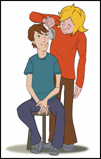
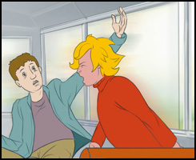
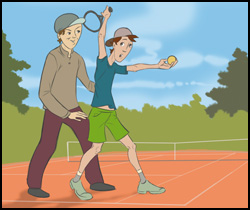

Wenn du ein Ja-Gefühl hast, kannst du Ja sagen und wenn du ein Nein-Gefühl hast, kannst du Nein sagen.
Du kannst anderen Leuten sagen, wie du dich fühlst, wenn du berührt wirst.

Mit einem lauten, deutlichen Nein kannst du auf dich aufmerksam machen, wenn du Hilfe brauchst.

Also denk daran, nur du weißt, wie dein Körper fühlt. Es ist nicht leicht Nein zu sagen, aber wenn du ein Nein Gefühl hast, geh zu jemanden und erzähle es ihm.
Was der Mann gemacht hat, ist sexueller Missbrauch.
 Chat“ heißt plaudern. Man kann sich im Chatroom über den Computer mit anderen Leuten z. B. schriftlich unterhalten. Es ist wichtig sich an die Chatregeln zu halten.
Chat“ heißt plaudern. Man kann sich im Chatroom über den Computer mit anderen Leuten z. B. schriftlich unterhalten. Es ist wichtig sich an die Chatregeln zu halten.
1. Habe ich ein Ja- oder ein Nein-Gefühl?
2. Weiß jemand, wo ich bin?
3. Bekomme ich Hilfe, wenn ich Hilfe brauche?
Und wenn du nun auf eine dieser drei Fragen mit Nein antwortest, dann hast du auch das Recht Nein zu sagen und gehe zu einem Menschen deines Vertrauens und erzähle es ihm.